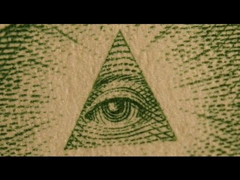
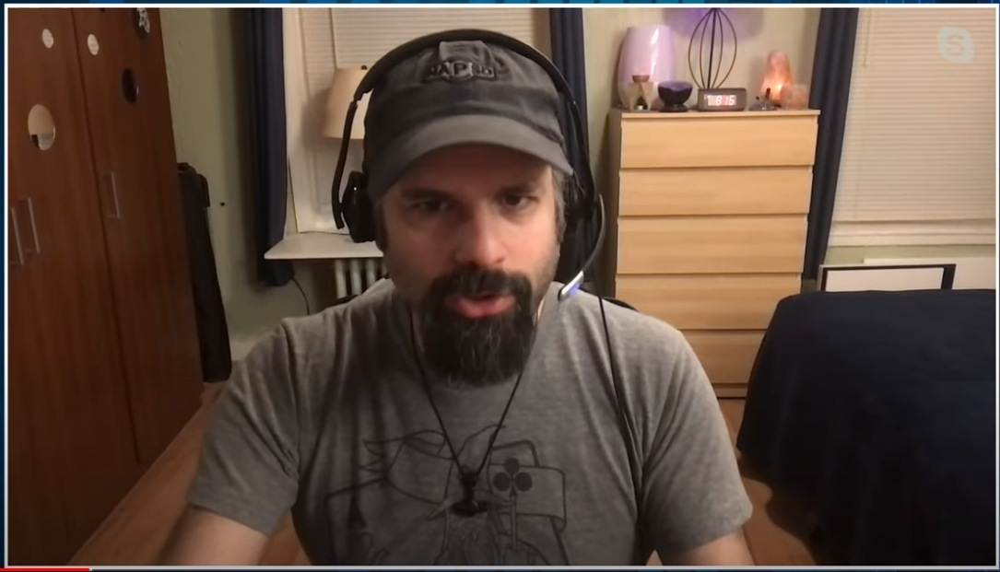

The Deepest Secrets of the Occult Power

Preface
- I saw a video interview with Mark Passio (see below). I have discussed him in a previous article below. Mark Passio discusses "Natural Law." (2020-05-27) Lecture Video: Decoding the "Matrix" Film Trilogy (2015-06-25) - Mark Passio (below) testifies to the reality of the "dark occult" he experienced. I will use his statement as a starting point to comment on the title of this article. Summary
- 15:30 I had the following experience when I was involved as a teacher in several occult groups. I was surprised to find that although ordinary people from all walks of life were involved, many politicians, businessmen, bankers, judges, military officers, police officers, school teachers, entertainers, scientists, and doctors were also involved in occult groups. - 15:30 Leading figures in global corporations also participated in satanic rituals. They wanted to take away the freedom of the common people, treat them as slaves, and take the position of rulers through occult knowledge. I have seen it firsthand. It is what I call "dark occult" and the opposite of "white occult. - 27:00 They have used occult knowledge for centuries to manipulate the consciousness of the dead and control the consciousness of ordinary commoners. They do not profess it publicly, but they have told it to me behind closed doors with impunity. - 28:30 They manipulate the media, the police force as their lapdogs, and the military as their tools. Therefore, they call the police and the military "our lapdogs. They also refer to the general public as dead people (i.e., zombies). - 30:00 The claim that evil will be destroyed is the fairy tale of spiritual world believers. Look at the history of Nazi and Chinese oppression. - 35:00 People misunderstand Satanism. Satanism is not about interacting with demonic beings. The core of Satanism is to assume that there is no good or evil and to use others as one pleases for the sake of one's own ego. - 44:00 The only one I recognize is Natural Law.Video (1:59:56)
The Dark Occult, Agendas of Non-Human Entities, Natural Law and More | Mark Passio | UFO HUB #52My view 1
- Mark Passio believes that Natural Law (e.g., don't kill, don't rob, don't rape...etc.) is Law (in context, it means a code that humans must abide by, a code that invites retribution after death if not followed) and still seems to preach it enthusiastically in interviews and lectures. - However, such Low is nothing more than a desire or philosophy of "this is the way we want the world to be, or rather, the way it should be." - Humans are a kind of animal, and there is no law in the animal world that says "do not kill or take away." Naturally, such a law does not exist in the human world either. Because they do not exist, we have been trying for thousands of years to suppress them with artificial institutions (i.e., substitutes for laws) such as morals, religions, and ethical codes. - Because they do not exist, we have been trying for thousands of years to put a tag on them with artificial institutions (i.e., substitutes for laws) such as morality, religion, and ethical codes.My view 2
- Mark Passio's statements in this interview indicate that he naively believes in the esoteric power of the occult. In other words, he genuinely believes in the following: - (a) The "hidden and unknown power" of occult rituals and knowledge has a profound effect on the real world. - (b) Occult organizations such as the Illuminati and Freemasonry control society from behind the scenes by exercising "hidden and unknown power. - (c) Therefore, the elite of society also join occult organizations for their power. - But occult power, like remote viewing and positive dreams, can be rare and capricious, but never regular or practical. In this sense, occult power is like a lottery ticket. In other words, occult power is practically a fiction. The "hidden and unknown power" is only an illusion (i.e., a fiction) of occultists. To avoid misunderstandings, let me emphasize this at the outset. - But that is not the end of the story. Beyond the fantasy of the occult fan, there is a "veiled secret." That secret is the secret of "hidden and unknown power" in the occult in the true sense of the word. The secret is openly (haha) disclosed and explained below. - Again, the "hidden unknown power" is only an illusion of occult fans. But because it is an illusion, it has a use. It is the same as money. The value of money is an illusion, but if the majority of people believe that it has value, then money begins to be used in society. And everyone's entire life is controlled by the power of money, which is supposed to be nothing but an illusion. - The same can be said for occult unknown power. Occult unknown power is only a fiction, but if a large number of people (especially the elite class) believe even slightly that occult unknown power exists, it will begin to have a real impact on society. When people see this influence, they start to believe in it even more. In other words, fiction (= pure illusion) begins to exercise power in reality. Fiction begins to dominate reality. - Through this system, the Christian Church dominated society with overwhelming power in the Middle Ages. The Emperor System in Japan is based on the same mechanism. The Freemasons who founded the United States, Illuminati, and other organizations that understood and knowingly used this system. The symbol of the all-seeing eye on the dollar bill is a typical bluff to make people think that there is something behind it. - The key points of the secret rituals of occult unknown power, when overtly disclosed, are described above. - In other words, the "hidden and unknown power" of the occult does not exist from the beginning, but by bluffing and acting cleverly as if it does exist (even more effective if one eventually comes to really believe it oneself), it is possible to exert a similar influence on reality. This (i.e., control of reality through fiction) is the secret of occult power in the true sense of the word. - Another concrete example is Zen. Enlightenment and koans are typical of this "hidden and unknown power. There is no such thing as a "hidden (i.e., inexpressible, ethereal) truth" in Zen enlightenment or koans from the start, but by bluffing and cleverly acting as if such a truth exists (even more effective if one eventually comes to truly believe it oneself), one can exert a similar influence on reality. - Everyone, including prominent Buddhist scholars, is grateful for such blatant bullshit (and the incantations at the end) as the "Prajnaparamita Sutra"'s "Vanity of vanities; all is vanity." It is the same mechanism that allows temples to make a living by chanting incantations at funerals (*1). - Yet another concrete example is the fiction of "The State of Religious Enlightenment."More to the point... Enlightenment is a kind of "illusion about the model of what the ideal personality is like" shared among the community. Therefore, even the majority of ordinary people must be able to perceive it to some extent. If the state of enlightenment cannot be perceived by anyone, it is as if it did not exist. Since it is an illusion to begin with, it has no substance. In other words, it is a fictional existence that can only be vaguely perceived. It is a fiction, but like money, it exerts a strong influence on the community and controls the thought patterns of its members. The idea that "one cannot judge the level of enlightenment of the other person until he or she has reached that level of enlightenment" itself is also part of the aforementioned illusion shared among the community. The notion of "this is what enlightenment is. this is what an enlightened person does" is already a shared illusion. Literature of Zen Lore has played a role in spreading this illusion. To use a crude example, the state of enlightenment is like the "kanroku"(great presence with dignity) of a Yakuza(gang) boss in a fictional narrarive story. The "kanroku" is a kind of illusion of normative personality shared among the community of Yakuza(gang) society. The literature of Zen Lore corresponds to the narrative story in Yakuza community, both of which are fictional stories. ref: What is the State of Enlightenment? (2022-07-16)- Jordan Maxwell (a well-known occult researcher) and others fail to see this subtlety and wander off in the wrong direction, wondering what the symbols are, what the original meaning of the words is, and what the hidden meaning is. The Da Vinci Code and the Kabbalistic mysteries are in the same league. - Occult power in the above sense is used not only in the occult world, but also in religion, management, politics, military, and international elite organizations (e.g., Davos Conference, Council on Foreign Relations, ...). The mass media also make full use of it (e.g. fake news). - Naturally, this "fictional domination of reality" is also prevalent in popular belief. For example, the social ideal that "all human are equal" is one such example. There is no solid basis for this social ideal. There are various claims by scholars, but all of them are nothing more than empty theories. - On the contrary, there is an abundance of material to disprove it. Everyone realizes that it is a fiction in their daily lives. And yet, no one can deny the fictional premise or openly point out that it is a fiction. And on the basis of the fiction that "all human beings are equal," the ruling class bends reality to its advantage. This has led to countless tragedies of communism and socialism - see the genocide of their own people by Pol Pot, Stalin, and Mao Zedong. This is the horror of the domination of reality by fiction. - Incidentally...the Roswell UFO case and the MJ-12 document have also exerted tremendous influence on the UFO industry by "bluffing and acting cleverly as if they existed, even though they did not exist in the first place. - Well, that is my understanding of the mechanism of occult power at this stage. Perhaps someone else has a more in-depth and convincing explanation to the same effect that I am unaware of. - PS: When I started writing this sentence, I thought it was quite a penetrating view, but when I finished it and read it back calmly, I realized how banal and mediocre it was... (haha). This seems to be the limit of my ability.（*1）
- Hajime Nakamura (a noted Buddhist scholar) stated in his book the Buddha refused to accept offerings or rewards for chanting verses (including sutras and incantations, given the context). My memory is a little fuzzy, but it seems that Budda also forbade monks from doing so. - Since the Buddha took it for granted that monks would receive offerings and rewards for their preaching to believers, he probably highly valued preaching and conversely prohibited chanting sutras, verses, and incantations to believers for magical effect as an inferior act. (2021-11-07)
Thanks
- Translated with www.DeepL.com/Translator (free version)
(2022-07-30 translate)
First Published article (Japanese)
【編】オカルト的パワーの秘儀をあからさまに公開し、解説してみる。 (2021-11-07)
Degree of completion of this article: